富士家の贅沢体験プラン。山梨・日本の美食を極める
甲州ワインビーフ､あわびの煮貝、ジビエや海鮮｡
伝統の味に､最上級の彩りを｡
こんな方におすすめ
- 山梨や富士山旅行をより特別にしたい方
- 記念旅行や思い出作りを大切にしたい方
- 日常では味わえない「非日常的な食体験」を求めている方
至高のほうとう体験コース

山梨堪能フルコース
5,500円（税込）
山梨の味覚を一度に楽しめる、
富士家最上級の贅沢セットです。
メイン
※麺の種類（ほうとう・そば・うどん）は予約時にお選びください。
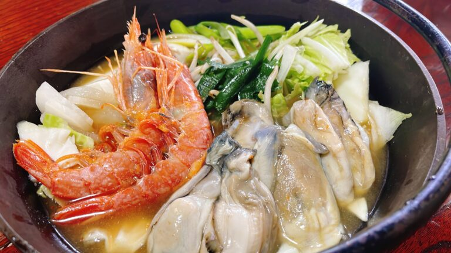
極み海鮮ほうとう体験コース
5,000円（税込）
特別な旅だからこそ選びたい、ワンランク上のご褒美体験。厳選した海の幸をプラスして、"記憶に残る一杯"へ。
ご予約時に、以下のプランから
どちらかおひとつお選びください
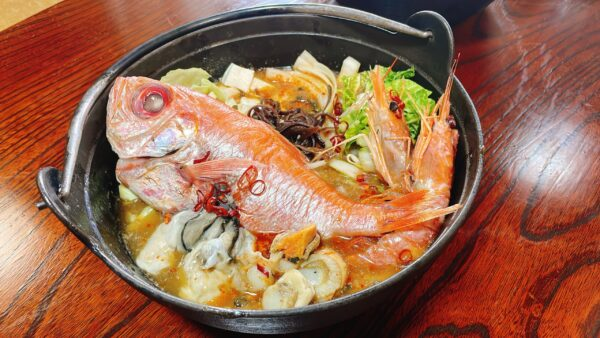
海鮮全部のせほうとう体験
+わらび餅セット
金目鯛、牡蠣、エビ、ホタテがセットのなった豪華海鮮ほうとうです。エビや牡蠣から濃厚な旨みと出汁が出てほうとうがが特別な料理に。是非旅の記念に。

北海道産 本ズワイガニ
+わらび餅セット
北海道産の新鮮な本ズワイガニを贅沢に使用。繊細で上品な甘みと、噛むほどに広がる濃厚な旨みが特長です。スープに溶け出すカニの出汁が、麺の味わいを一段引き上げます。

プレミアム体験コース
4,500円（税込）
山の幸・海の幸・山梨の名産を贅沢に組み合わせた特別プラン。ほうとう・忍野八海そば・吉田のうどんを、"旅のごちそう"にグレードアップ。
※そば・うどんは【温かいメニュー限定】となります。
ご予約時に、以下のプランから
おひとつお選びください
山の幸セット
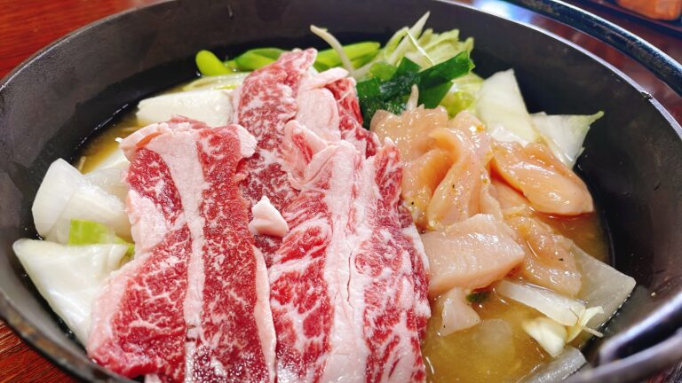
甲州ワインビーフ ＋ ジビエ鹿
山梨が誇るブランド牛「甲州ワインビーフ」と、山梨の山で育ったジビエ鹿肉の競演。それぞれの旨みがスープに溶け込む、山の恵みを存分に味わえるプランです。
海の幸セット
エビ ＋ 牡蠣 ＋ ホタテ
エビ・牡蠣・ホタテの3種の海鮮を豪快に投入。それぞれの出汁が重なり合い、スープが驚くほど濃厚な旨みに。海鮮好きにはたまらない贅沢な一杯です。
うな丼 ＋ 馬刺しセット

香ばしいうなぎの蒲焼きと、新鮮な馬刺しの豪華な組み合わせ。麺体験に和の贅沢が揃う、特別感あふれるプランです。
あわびの煮貝 ＋ 馬刺しセット
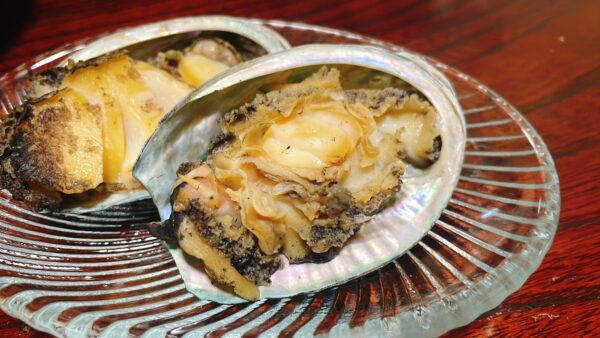
山梨の郷土料理「あわびの煮貝」と甘みのある馬刺しを一緒に楽しめる、山梨ならではの組み合わせ。旅の記念にぴったりの特別セットです。
豪華ほうとう体験コース

こだわりの食材をトッピングした、ちょっと贅沢なほうとう体験。
旅の気分に合わせてお好みの一品をお選びください。
牡蠣ほうとう
濃厚な旨みを持つ牡蠣をたっぷり投入。スープにコクと深みが加わり、体の芯まで温まる一杯。
ホタテほうとう
甘みと旨みが豊かなホタテが主役。繊細な貝の出汁がスープに広がる、上品な一杯です。
ジビエ鹿ほうとう
山梨の山で育ったジビエ鹿肉を使用。野性味あふれる深い旨みが、ほうとうのスープに溶け込みます。
エビほうとう
プリプリの食感と濃厚な海老の旨みがスープに広がる贅沢な一杯。見た目も華やかで特別感抜群。
ワインビーフほうとう
山梨ブランド牛「甲州ワインビーフ」をトッピング。きめ細やかな肉質と甘みが麺とスープに溶け込む人気の一杯。
金目鯛ほうとう
豪華な金目鯛を使用した、富士家イチの贅沢ほうとう。上品な白身の旨みと出汁がスープを極上の味わいに引き上げます。
※各コースには麺体験（ほうとう・うどん・そばから選択）が含まれます。麺の種類は予約時にお選びください。
体験をさらに
豊かにする
追加オプション
御飯セット（単品追加枠）
体験のお食事に、もう一品。富士家では、釜めしセットやうな丼を単品でもご注文いただけます。
釜めしはみんなで分け合える【2～3人前サイズ】なので、グループ利用にもおすすめです。
選べる海鮮釜めしセット
各種体験に＋1,280円

エビ、ホタテ、牡蠣から選べます。海鮮の旨みがご飯にしっかり染み込んだ、定番人気の一品。
うな丼セット
各種体験に＋500円
人気のうな丼です。もう一品ほしいときにおすすめです。
イチオシ
甲州ワインビーフの
物語

歴史と誕生
「甲州ワインビーフ」は、山梨県の畜産農家が「ワインの副産物を活用して、持続可能で高品質な牛肉を作りたい」という思いから誕生しました。40年以上の歴史を持ち、山梨県内外で高く評価されているブランド牛です。

味の特徴
最大の特徴は、きめ細やかな肉質とほんのりとした甘み。ぶどうかす由来のポリフェノールが脂に移ることで、脂身がすっきりとして胃もたれしにくいのが特徴です。旨味成分（アミノ酸）が豊富で、赤身本来の深い味わいをご堪能いただけます。

サステナビリティ
ワイン産業の副産物を飼料に活用する「循環型畜産」により、環境負荷を軽減。食べることで地域の伝統と自然を守る、SDGsの観点からも注目されている「未来につなぐ牛肉」です。
体験の様子
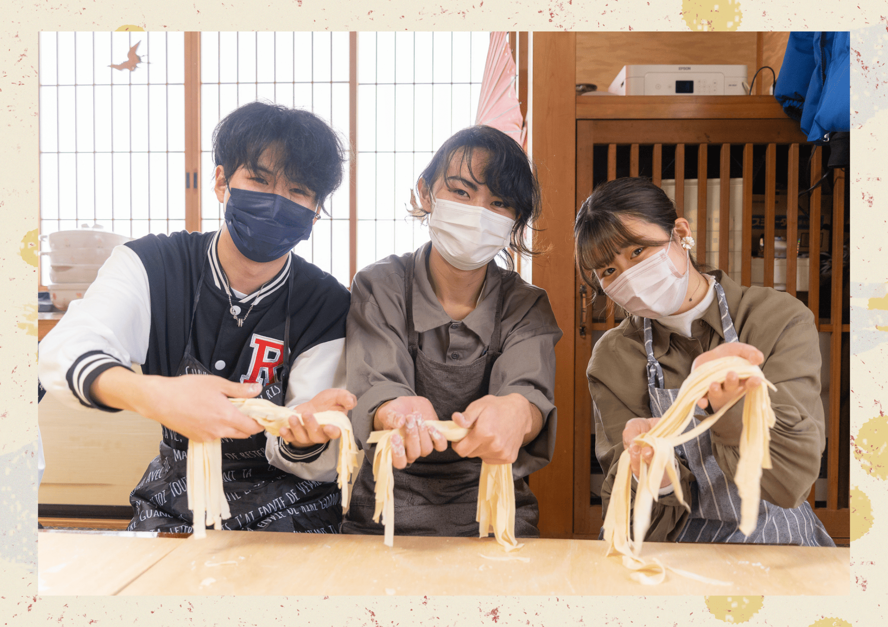


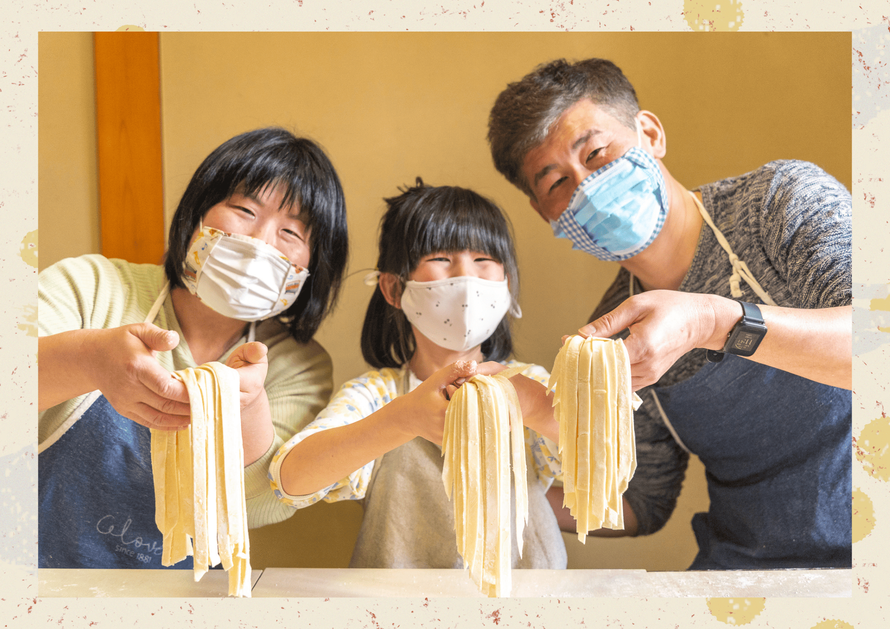

お客様の感想
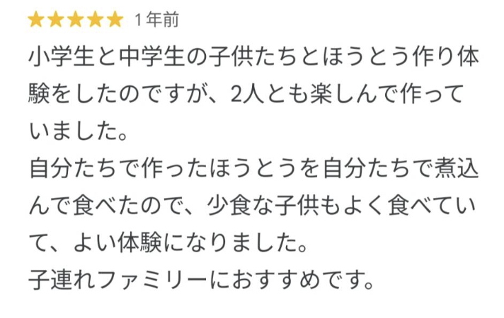
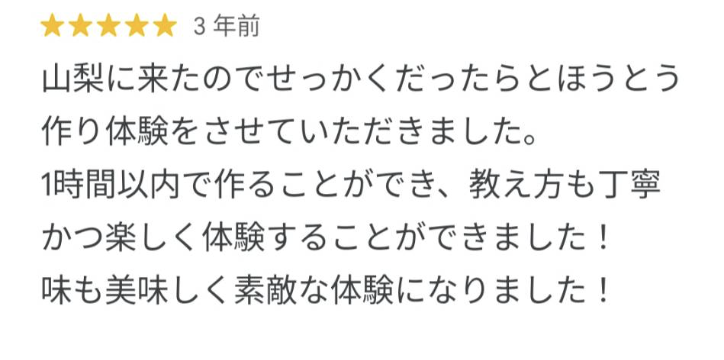


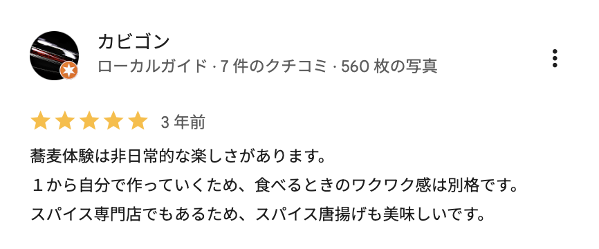


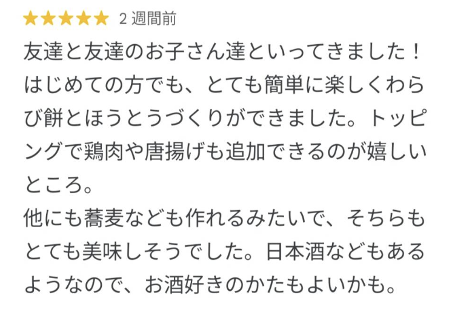
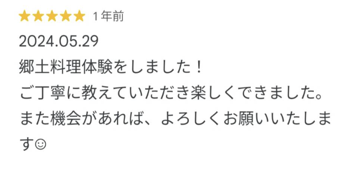

よくある質問
Q. 体験の所要時間はどれくらい？
A. 約90〜120分（調理・食事・説明含む）を予定しています。
Q. 小さな子どもでも参加できますか？
A. 5歳以上のお子様から参加OK。親子での体験にもぴったりです。
Q. 予約なしでも参加できますか？
A. 空きがあれば当日予約も可能ですが、事前予約が確実です。
Q. 英語は通じますか？
A. 簡単な英語でのご案内が可能なスタッフが在籍しております。ただし、ネイティブレベルの対応ではないため、通訳の方がご同行の場合はご協力いただけますと助かります。
Q. ワインが飲めない場合は？
A. 山梨産ぶどうジュースをご提供いたしますのでご安心ください。
Q. 雨の日でも開催されますか？
A. 屋内施設で実施するため、雨天でも問題なくご参加いただけます。
Q. 団体予約はできますか？
A. はい、最大80名様まで団体でのご予約が可能です。
Q. アレルギー対応はできますか？
A. 事前にご相談いただければ可能な限り対応いたします。
Q. 支払い方法は？
A. 現金、クレジットカード（VISA/MASTER/AMEX）、PayPayがご利用可能です。
Q. 体験会場はどこですか？
A. 河口湖店・甲府店のいずれでもご予約いただけます。